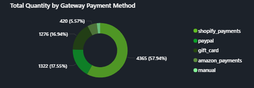

Shopify Sales Report: Unveiling the Data Story
INSIGHT ENGINE
Imagine stepping into the bustling world of an e-commerce giant, where every transaction tells a story of customer behavior, sales trends, and regional preferences. This report dives into a six-day snapshot of dummy data, crafted for practice purposes using DAX measures, to uncover the heartbeat of our Shopify store. The data, sourced from a simulated dataset, offers a glimpse into transaction performance, customer habits, and geographic insights, all processed through a custom-built dashboard. Let’s embark on this journey to reveal what drives our business.
WHAT IS SHOPIFY?
Shopify is an easy-to-use e-commerce platform that enables individuals to sell products online and in person. Whether you're a small business owner starting or a large brand looking to grow, Shopify provides the tools you need to build your online store, manage your products, take payments, and track orders all in one place. It’s designed to make running an online business simple and flexible, allowing sellers to focus more on their customers and less on the technical aspects.
PROJECT AIM AND KPI REQUIREMENTS
The goal of this project is to analyze Shopify sales data in Power BI, revealing actionable insights into transaction performance, customer purchasing behaviour, and long-term customer value. Through an interactive dashboard, the aim is to enable stakeholders to spot patterns in revenue generation, customer retention, and engagement trends, empowering data-driven decisions that align with the robust sales figures, loyal customer base, and regional strengths highlighted in my analysis.
- Transactions Performance: This section focuses on evaluating the overall health and effectiveness of sales operations by tracking Net Sales, Total Quantity, and Net Average Order Value.
- Customer Purchase Behaviour: This is understanding how customers interact with the business. We want to know the Total Customers, Single Order Customers, and Repeat Customers.
- Retention and Value: This is to evaluate long-term growth and customer values such as Lifetime Value (LTV), Repeat Rate, and Purchase Frequency.
- Regional Overview
- Sales Trend Overtime
- Gateway Payment Method
- Product Type
- Dedicated page to display detailed data
DATA DICTIONARY
- Admin GraphQL API ID: This is a globally unique identifier utilized by systems that implement GraphQL APIs. It enables accurate retrieval of specific records, such as orders or products within a backend system. This ID is typically not human-readable and is intended for programmatic use.
- Order Number: This is a unique, often sequential number or code assigned to each customer order. It facilitates order tracking, reference, and support inquiries, and is commonly displayed in confirmation emails or invoices (e.g., #12345).
- Billing Address City: The city specified in the customer's billing address during checkout or registration. It is used for purposes such as tax calculation, fraud prevention, and maintaining accurate records.
- Billing Address Country: The country associated with the billing address. It can be helpful in tax rules, payment gateway processing, and regional business reporting.
- Billing Address First Name: The first name of the person associated with the billing address. Often required for processing payments and generating invoices.
- Billing Address Last Name: The last name (surname) of the person on the billing address. Combined with the first name, it provides full identification.
- Billing Address Province: The province, state, or region as per the billing address. For example, "California". This is often required for tax calculations and regional reporting.
- Billing Address Zip: The postal code (ZIP code) of the billing address. Used in shipping and tax estimation, and sometimes in fraud prevention by validating card transactions.
- CITY: Likely a redundant or duplicate field of "Billing Address City," but it could also be intended for a shipping city or a manually entered override field. Needs clarification or cleanup in the dataset.
- Currency: The type of currency used in the transaction, represented in ISO format (e.g., USD for US Dollars, EUR for Euros). It indicates the financial context in which the prices are recorded.
- Customer ID: A system-generated unique identifier for a customer. Used to link orders, communications, preferences, and order history to a specific customer.
- Invoice Date: The date the invoice was created or finalized for the transaction. This can be important for accounting, tax reporting, and determining payment terms.
- Gateway: The payment processing service used to complete the transaction. Examples include Stripe, PayPal, Razorpay, etc. This helps in reconciling payments and understanding transaction channels.
- Product ID: A unique identifier for the product being purchased. This is used internally to track inventory, pricing, and product performance across sales.
- Product Type: A classification or category of the product. For instance, it could be "Software," "Clothing," "Electronics," etc. Helps in reporting and filtering products.
- Variant ID: Products may come in multiple variants (e.g., different sizes or colors). The Variant ID uniquely identifies a specific version of the product.
- Quantity: The number of units of the product purchased in the order. Important for inventory management and sales volume analysis.
- Subtotal Price: The total cost of all items before applying taxes, shipping charges, or discounts. It reflects the base cost of the order.
- Total Price USD: The total price paid, including taxes and possibly shipping, converted to USD (if the transaction was in another currency). Useful for standardizing financial reporting across currencies.
- Total Tax: The total amount of tax (like VAT or GST) applied to the order. This is important for compliance and reporting in many regions.
Unravelling the insights
The transaction performance paints an impressive picture, with net sales reaching $4,180,874 across 7,534 total quantities, averaging a net order value of $562.6. This hefty revenue underscores a thriving marketplace where each sale reflects customer trust and product appeal. The standout figure here is the net sales, a testament to the store’s ability to generate significant income in just six days.

Our customer base is a vibrant mix of 4,431 total customers, with 2,392 being single-order shoppers and 2,039 repeat buyers. The repeat rate of 46% and a purchase frequency of 1.68 indicate a loyal core, although the moderate frequency suggests room for encouraging more frequent purchases. The lifetime value of $ 943.60 per customer stands out as a key metric, highlighting the long-term potential of our repeat clientele.
Geographically, the story unfolds across the United States, with a regional overview revealing hotspots like Washington, D.C., Houston, and New York leading in Net Sales, Total Quantity, and Total Customers. Meanwhile, Washington, D.C., Houston, and Las Vegas are leading in terms of repeat customers.

The map, dotted with green clusters, shows a dense concentration in the Southeast and West, suggesting these areas are prime markets. Washington’s top ranking stands out, hinting at a regional sales powerhouse worth exploring further.
From this analysis, the overall trend indicates a fluctuating yet upward trajectory, with daily quantities recently reaching a peak of 1,158 units. While this shows strong and growing demand, the intermittent dips in earlier periods suggest that seasonal volatility still plays a role. It’s something we’ll need to monitor and potentially address with better forecasting or promotional smoothing strategies.
 A particularly notable highlight is that net sales reached an impressive peak of $643,793, and the total customer count hit a high of 1,048. These figures reflect both the expanding reach of our brand and the effectiveness of our recent marketing and conversion efforts.
The hourly performance, as visualised in the column chart, also provides valuable insights. There's a steady ramp-up in activity starting at 8 AM, peaking and fluctuating between 1 PM and 5 PM, and then declining noticeably after 5 PM. This rhythm suggests key engagement windows where we focus on customer communications, promotions, or even schedule staff more effectively to optimise support and fulfilment.
A particularly notable highlight is that net sales reached an impressive peak of $643,793, and the total customer count hit a high of 1,048. These figures reflect both the expanding reach of our brand and the effectiveness of our recent marketing and conversion efforts.
The hourly performance, as visualised in the column chart, also provides valuable insights. There's a steady ramp-up in activity starting at 8 AM, peaking and fluctuating between 1 PM and 5 PM, and then declining noticeably after 5 PM. This rhythm suggests key engagement windows where we focus on customer communications, promotions, or even schedule staff more effectively to optimise support and fulfilment.
Regarding payment methods, Shopify Payments remains the preferred choice, accounting for 420 transactions, or 57.5%. This aligns with customer expectations for seamless and secure checkouts. Gift cards follow with 327 transactions (44.8%), which is a significant number and suggests a strong pull from promotional incentives or gifting behaviour.  It might be worth exploring how to further capitalize on this trend, possibly through more targeted campaigns or seasonal bundles.
On the product front, running shoes continue to dominate, with 2,659 units sold. This clear lead confirms that the product category resonates strongly with our audience and reinforces the need to prioritize it in inventory planning, advertising, and potential upselling strategies. Other product categories trail significantly, so doubling down on this top performer could yield even greater returns.